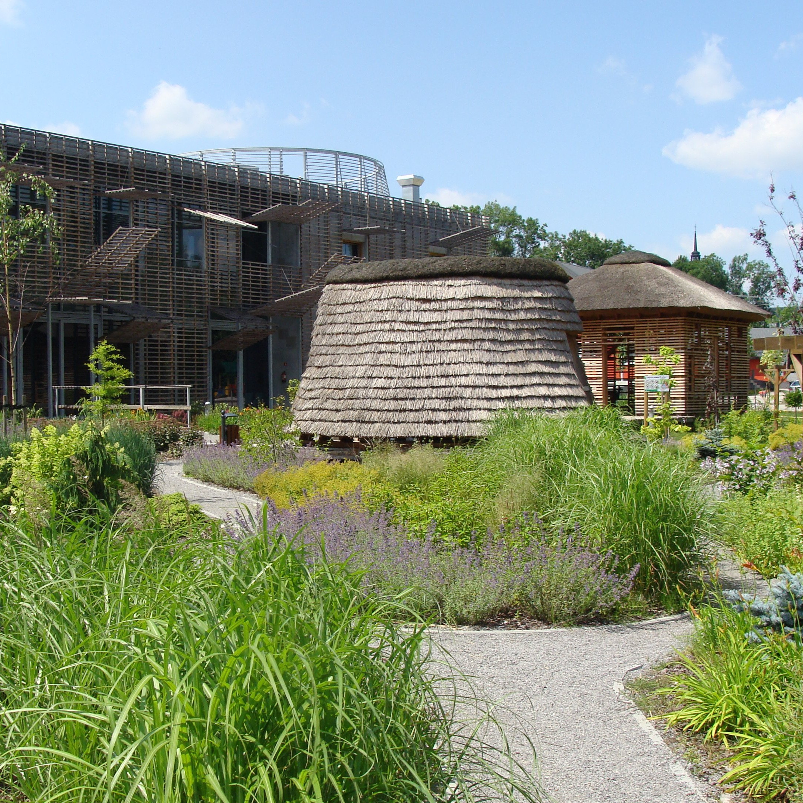

Europejskie Centrum Bajki im. Koziołka Matołka
Dziecięce centrum kultury znajdujące się w Pacanowie, oficjalnie otwarte 24 lutego 2010 roku. Instytucja prowadzi działalność kulturalną skierowaną do dzieci, rodziców i osób pracujących z dziećmi.